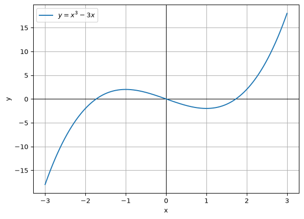
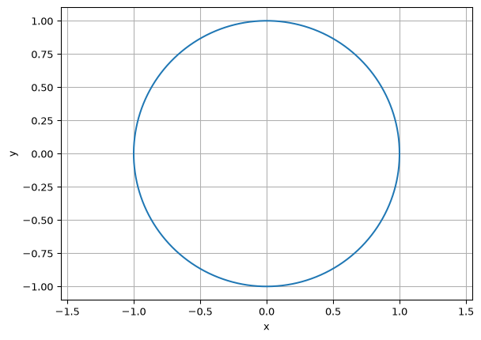
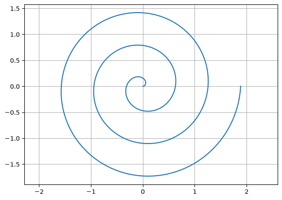
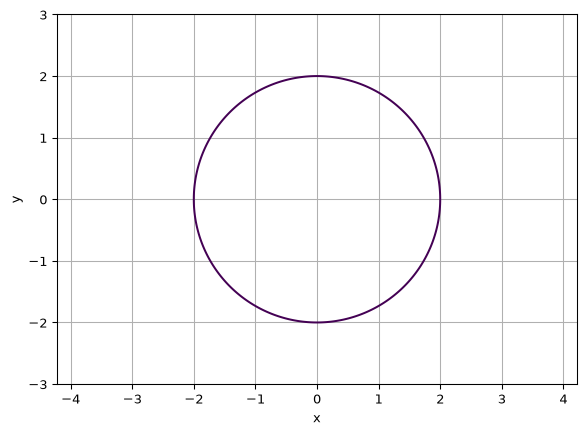
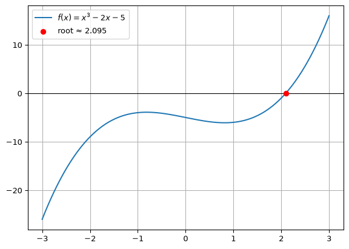

Parametric equations are useful for circles, spirals, motion paths, animations, and curves that do not represent \(y\) as a single-valued function of \(x\).
Implicit curves
An implicit curve is defined by an equation such as
\[
F(x,y)=0.
\]
Example:
\[
x^2+y^2-4=0.
\]
This is a circle of radius 2. It is not necessary to solve explicitly for \(y\). Instead, evaluate \(F(x,y)\) over a grid and draw the zero contour.
Plotting explicit curves
The following example plots
\[
y=x^3-3x.
\]
import numpy as npimport matplotlib.pyplot as pltx = np.linspace(-3, 3, 1000)y = x**3-3*xplt.axhline(0, color="black", linewidth=0.8)plt.axvline(0, color="black", linewidth=0.8)plt.plot(x, y, label=r"$y=x^3-3x$")plt.xlabel("x")plt.ylabel("y")plt.grid(True)plt.legend()plt.show()

np.linspace(-3, 3, 1000) creates 1,000 equally spaced values between -3 and 3. NumPy then evaluates the expression for all values in the array.
Why resolution matters
The computer does not draw a mathematical curve directly. It calculates a finite set of points. A larger number of points generally creates a smoother plot, but increasing resolution does not automatically resolve discontinuities, asymptotes, or omitted branches.
Always inspect the domain and special features of the equation before interpreting the plot.
Analysing a curve with calculus
A plot is useful, but calculus explains why the curve has its shape. A standard curve-analysis workflow is:
Determine the domain.
Find the \(x\)- and \(y\)-intercepts.
Check symmetry.
Calculate the first derivative.
Solve \(f'(x)=0\) for stationary points.
Examine increasing and decreasing intervals.
Calculate the second derivative.
Identify concavity and possible inflection points.
so \(x=-1\) and \(x=1\). Their corresponding coordinates can be calculated with:
[(p, f.subs(x, p)) for p in stationary_points]
[(-1, 2), (1, -2)]
Plotting parametric curves
Circle
import numpy as npimport matplotlib.pyplot as pltt = np.linspace(0, 2*np.pi, 1000)x = np.cos(t)y = np.sin(t)plt.plot(x, y)plt.axis("equal")plt.xlabel("x")plt.ylabel("y")plt.grid(True)plt.show()

plt.axis("equal") ensures that one unit on the horizontal axis has the same visual length as one unit on the vertical axis. Without it, a circle can appear to be an ellipse.
Spiral
t = np.linspace(0, 6*np.pi, 2000)r =0.1* tx = r * np.cos(t)y = r * np.sin(t)plt.plot(x, y)plt.axis("equal")plt.grid(True)plt.show()

Plotting implicit curves
For
\[
F(x,y)=x^2+y^2-4=0,
\]
create a two-dimensional grid and draw the contour where the expression equals zero:
import numpy as npimport matplotlib.pyplot as pltx = np.linspace(-3, 3, 500)y = np.linspace(-3, 3, 500)X, Y = np.meshgrid(x, y)Z = X**2+ Y**2-4plt.contour(X, Y, Z, levels=[0])plt.axis("equal")plt.xlabel("x")plt.ylabel("y")plt.grid(True)plt.show()

The plotted contour represents all points satisfying
\[
F(x,y)=0.
\]
This approach is useful when solving for \(y\) explicitly is difficult or would produce only one branch of the curve.
Numerical roots
A root of a function is a value \(x\) for which
\[
f(x)=0.
\]
Some equations have exact algebraic solutions. Many important equations do not, so a numerical method is used to obtain an approximation.
The interval \([2,3]\) is suitable because the function changes sign across the interval:
f(2), f(3)
(-1, 16)
A sign change indicates that a root is bracketed, assuming the function is continuous on the interval. brentq is a reliable bracketing method for one-dimensional roots.
Plotting the root
import matplotlib.pyplot as pltx = np.linspace(-3, 3, 500)y = f(x)plt.axhline(0, color="black", linewidth=0.8)plt.plot(x, y, label=r"$f(x)=x^3-2x-5$")plt.scatter(root, 0, color="red", zorder=3, label=f"root ≈ {root:.3f}")plt.grid(True)plt.legend()plt.show()

Finding several roots by scanning
If the intervals containing roots are unknown, sample the function over a range and look for sign changes.
nsolve may converge to different roots depending on the initial guess. It is therefore good practice to combine it with a plot, an algebraic analysis, or a systematic scan.
Systems of equations
For two implicit curves, solve two equations in two unknowns. Consider:
\[
x^2+y^2=25,
\]
and
\[
y=x+1.
\]
x, y = sp.symbols("x y")equations = [ x**2+ y**2-25, y - x -1]solution = sp.nsolve(equations, [x, y], [3, 4])print(solution)
Matrix([[3.00000000000000], [4.00000000000000]])
The values [3, 4] are an initial guess for the point \((x,y)\). Try a different initial guess to search for another solution:
Newton’s method is fast near a root, but it can fail when the initial guess is poor, the derivative is zero or very small, or the iteration moves into an unsuitable region. For robust general-purpose work, a bracketing method such as Brent’s method is often preferable when a valid interval is available.
Choosing a method
Task
Recommended approach
Plot \(y=f(x)\)
NumPy and Matplotlib
Plot a circle, spiral, or motion path
Parametric equations
Plot \(F(x,y)=0\)
Matplotlib contour
Differentiate or integrate
SymPy
Find exact algebraic roots
SymPy solve
Find one bracketed numerical root
SciPy brentq
Find roots when intervals are unknown
Scan and then use brentq
Find a root from an initial guess
SymPy nsolve or Newton’s method
Solve several equations in several variables
SymPy nsolve or SciPy root
Numerical reliability checklist
Before accepting a result:
Check that the function is defined over the selected interval.
For brentq, verify that the endpoints have opposite signs.
Substitute the computed root back into the equation.
Check the residual, such as abs(f(root)).
Plot the function or curves near the solution.
Use several initial guesses when using nsolve or Newton’s method.
Increase the scanning resolution if roots may be close together.
Remember that sign-change scanning can miss tangential roots.
Watch for discontinuities, asymptotes, and numerical overflow.
Round only for display; retain full precision for later calculations.
Complete worked example
The following program finds and plots the intersections between
\[
y=\sin(x)
\]
and
\[
y=0.3x.
\]
import numpy as npimport matplotlib.pyplot as pltfrom scipy.optimize import brentqf =lambda x: np.sin(x)g =lambda x: 0.3* xh =lambda x: f(x) - g(x)xs = np.linspace(-10, 10, 10000)ys = h(xs)roots = []for a, b, fa, fb inzip(xs[:-1], xs[1:], ys[:-1], ys[1:]):if fa ==0: roots.append(a)elif fa * fb <0: roots.append(brentq(h, a, b))roots = np.unique(np.round(roots, 10))intersection_points = [(r, f(r)) for r in roots]plt.plot(xs, f(xs), label=r"$y=\sin(x)$")plt.plot(xs, g(xs), label=r"$y=0.3x$")for x_value, y_value in intersection_points: plt.scatter(x_value, y_value, color="red", zorder=3)plt.axhline(0, color="black", linewidth=0.8)plt.axvline(0, color="black", linewidth=0.8)plt.xlabel("x")plt.ylabel("y")plt.grid(True)plt.legend()plt.show()print(intersection_points)
Compare the numerical answers with the exact algebraic answers.
Change the line to \(y=mx+c\) and investigate how the number of intersections changes.
Plot \(y=\sin(x)\) and several straight lines.
Identify a case where a sign-change scan misses a tangential intersection.
Use nsolve with different initial guesses and record which solution is found.
Implement Newton’s method and compare its convergence with brentq.
Key takeaway
The most reusable idea in computational curve solving is:
\[
\boxed{\text{An intersection of } f \text{ and } g
\text{ is a root of } f-g.}
\]
Use plots to explore the geometry, symbolic tools to analyse the mathematics, and numerical solvers to obtain approximate values when exact solutions are unavailable.